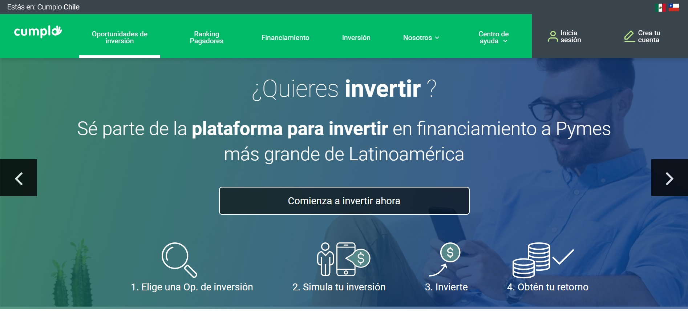

Cumplo
Progressive Web App que mejora el flujo de inversiones y capta a nuevos usuarios
Resumen
Sobre el proyecto
Cumplo es una plataforma que proporciona un punto de encuentro para que los inversionistas (usuarios prioritarios) puedan invertir su dinero, al tiempo que las pymes pueden recibirlo cuando más lo necesiten. Opera en el marco de la actividad Fintech, esto quiere decir que desarrolla su servicio en el mundo de las finanzas (finance) acudiendo a recursos tecnológicos (technology), buscando innovar y presentar una alternativa moderna a un servicio financiero, que en este caso son los préstamos.
Proceso de diseño

Empatizar para conocer la problemática

Observaciones y descubrimientos

Creación a partir de la lluvia de ideas

Ideas traspasadas a un prototipo

Validar el prototipo con los usuarios
Mi Rol: UX / UI
Cliente: Cumplo
Duración: 3 semanas, Abirl 2019
El desafío
Análisis de la plataforma actual de Cumplo, para entender el flujo de los usuarios. Captar un mayor número de inversionistas, por medio de una aplicación fintech en donde puedan invertir desde donde quieran y cuando quieran
Conociendo el problema
Entrevista con el cliente
Sus propósitos actuales se relacionan con nivelar la cancha, en donde una PyME puede obtener liquidez con una tasa justa de acuerdo a sus propios términos, pudiendo ser beneficiado además el inversor. Buscan a su vez, facilitar el proceso de inversión para los inversionistas, tener una mayor diversificación de inversiones y poder capturar un mayor número de nuevos usuarios. Entre sus fortalezas se encuentran:
Análisis de referentes
Aprendizajes

Reconocimiento del usuario
User Persona
Para sintetizar la información recabada de los usuarios, se realizaron dos user persona en donde se identifica al usuario principiante en inversiones y al usuario que invierte frecuentemente en Cumplo:
Inversionista principiante


Inversionista frecuente
Testeo de la plataforma actual
Oportunidades
Les costó diferenciar la información para inversionistas y para PyMEs que buscan financiamiento; consideran que el carousel inicial es confuso
No pudieron llegar fácilmente a la vitrina de empresas para realizar el simulacro de inversiones
Necesitaron ayuda para entender que podían invertir desde la sección de "Oportunidades de inversión"
Proceso creativo
Ideación
A partir de todo el proceso de investigación, surgieron las siguientes ideas:

Arquitectura de la información
Mapa de sitio
Teniendo en cuenta la información existente de la página actual se reorganizó la información con un nuevo mapa de sitio
Prototipo de mediana fidelidad
Wireframe
Una vez definidos los contenidos se realizó un wireframe para organizar la información

Decisiones de diseño
Prototipo alta fidelidad

El prototipo de alta fidelidad cuenta primeramente con una pantalla que divide la información para quienes sean inversionitas o para quienes busquen inversión (PyMEs).

Luego muestra cuáles son los beneficios con los que se podrá encontrar el usuario,por ejemplo que el flujo de información es transparente para quien decida invertir con Cumplo. Posteriormente, una introducción explicativa y amigable que indica el paso a paso para llevar a cabo una inversión.

La vitrina de oportunidades de inversión, en donde el usuario podrá filtrar por tipo de crédito, tasas y plazos. Una vez seleccionada la PyME en la que el usuario invertirá, tendrá acceso a información desplegable específica de cada crédito.

Cumplo para inversionistas cuenta también con un menú fijo y accesible, en donde el usuario en todo momento podrá trasladarse desde la pantalla de oportunidades, a la de su perfil o bien a la de centro de ayuda. Dentro de su perfil podrá encontrar su información personal, como el seguimiento de sus inversiones, mientras que dentro del centro de ayuda se verán principalmente las 5 FAQ's de la empresa junto con la guía del inversionista.